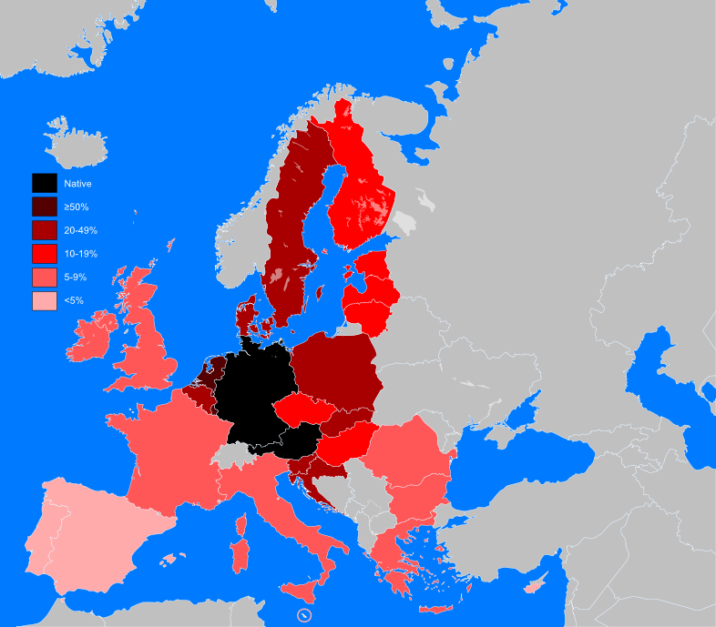

Why you should learn German Language
published on NOV 20, 2019
If you’ve decided to take on the task of learning a new language, congratulations! Speaking multiple languages considerably broadens your horizons and opens you up to new experiences. Not only is it a big resume booster, but it’s also a great way to make traveling easier and more adventurous. The question is how do you choose which language to learn? With so many to pick from and the difficulty of learning a new language, the decision can be agonizing.
Choosing which language to learn should depend on why you want to learn the language. What do you hope to achieve by being able to speak another language? You want to choose something that benefits you in multiple areas rather than just serving a single purpose. If you’re looking to learn a language that will aid you in the fields of academia, art and business, look no further.
There are some perceived barriers against learning German. These include the notoriously difficult to pronounce words and variety of spoken dialects that plague even the most fluent of German speakers. But the truth is that, in spite of these difficulties, acquiring the language will pay off. German is an incredibly useful language that’s a perfect choice to learn next. Here are some of the many benefits of learning German:
German Is The Language Of Academics
German is the language of academics, scientists and inventors. German is the second most commonly used scientific language, which makes sense considering the fact that over a hundred Nobel Prizes have been awarded to Germans in the categories of chemistry, physics and more. Learning German will enable you to read and understand the works of such great German minds as Albert Einstein or Werner Heisenberg.
Germany is known as “Das Land der Dichter und Denker”, or the “country of poets and thinkers”. This is certainly the case as the German book market ranking third largest in the world. Around 80,000 new books are published in Germany every year, but only a small amount of these are translated into English. If you know how to read German, you can read all of these new works. You’ll even be able to read works from literary giants such as Kafka and Goethe in their original language.The international reputation of German universities has a large effect on this focus on science and academia. A lot of German universities rank in the top 100 universities in the world. Plus, many German universities offer very low or free tuition, which makes Germany a haven for those seeking higher education. And you don’t even have to be German, as both domestic and international students get access to free undergraduate courses. By learning German, you can become a part of this community of learning.
Germany Has A Big Market Demand For Job Seekers
German companies are crying out for qualified staff. Well-trained women and men have good prospects in jobs that are particularly in demand. According to a study commissioned by the Bertelsmann Stiftung and published in February 2019, Germany is reliant on immigration from countries outside Europe. One major reason is because the demographics feature a high proportion of elders than young people. At present, one in five Germans is over the age of 65. By 2060, it's expected to be one in three.I left some resources about jobs in Germany at the end of the article.
Berlin has also become a hub for startups, which makes German an attractive language to learn for anyone interested in starting their own business. If you’re looking to get ahead in your career, a fluency in German is just the thing your resume needs to help you stand out.
Knowing German is a huge plus for anyone looking to do business in Europe. Every German citizen knows at least a little bit of English thanks to German schooling. However, being able to speak their language shows good faith to German business partners, making you more likely to close a deal. With German companies leading the global market, it helps to be able to communicate with the biggest players in business and establish a lasting professional relationship.
German Is One Of The Top European Languages
German is the second most-spoken language in Europe, and the first most-spoken native language. The amount of people who speak German as a first language is a staggering 95 million people! This is because German is the native language of Germany, Austria and much of Switzerland. But it’s also a popular second language as well, being the third most taught foreign language.
It’s a lingua franca for much of Europe, which means it’s the common language that many different people share. You’ll be able to travel almost anywhere in Europe and communicate effectively if you know German. In fact, Germans are some of the world’s biggest travelers thanks to Germany’s generous annual leave policy. If you’re an avid traveler, you’re likely to come across a German at some point in your travels. Knowing German can help you communicate with fellow travelers and enjoy new experiences with people you meet on the road.
German Is Everywhere
Whether you’re traveling in a foreign country or on the World Wide Web, speaking German is a skill you can use anywhere. Germans have a huge online presence, with 5.8% of all websites written in German. The German domain of .de is the third most popular top-level domain behind .com and .cn. It is also the second most popular country code top-level domain, falling just behind .cn. This means that speaking German can open you up to a whole new audience online, helping you reach and engage with more people than ever before.
Germans love their language and they admire and open their arms for people who learn their language. If you’re planning on moving to Germany, it’s important to learn German so that you get supported. Learning a new language is a huge investment of time and energy. You want to invest your time into something that’s going to pay off and learning German will pay off exponentially.
Whether you’re an academic looking to attend a German university or a business professional trying to invest in a Berlin startup, knowing how to speak German will be an incredible asset. Even if you’re just an avid traveler, you can still benefit from learning this ubiquitous and beautiful language.
Additional Resources
JOE LEONARD
Joe is a guest writer living in Los Angeles. He writes a blog of topical, emotionally powerful articles and essays. He also writes episodic television and short films.